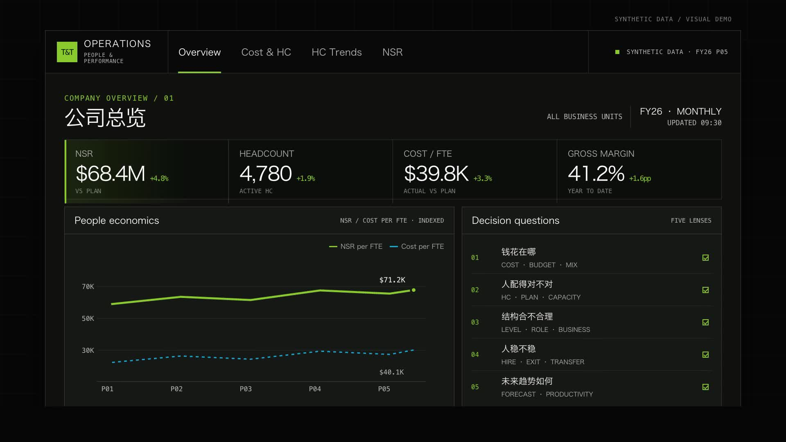

Dashboard 双语视频
先看原始中文、英文版本，再看白色 Operator’s Eye 优化版。所有界面均使用 synthetic data。
中文版 Dashboard 展示
使用合成数据演示人力资源仪表盘的整体路径与成本分析。
English Dashboard walkthrough
An English version of the same HR dashboard demonstration.
优化版 Dashboard 双语视频
重做后的中英文版本，用更清晰的白色界面呈现同一套成本、编制、趋势和人效分析。
- 白底视觉体系：由深色背景改为浅色背景，保留 Deloitte Green 与 Cost Blue。
- 新增成本视图：加入成本构成环形图和预算差异瀑布图。
- 核心分析保留：Cost & HC、HC Trends、NSR / GM / Cost per FTE 继续联动。
- 双语分别排轴：九个场景按中英文各自旁白时长重排，并缩至画布 90% 留出字幕安全区。
中文优化版 Dashboard 展示
74 秒，白色系统，新增成本构成与预算差异图。
English optimized Dashboard walkthrough
84 seconds, with a light interface and rebuilt bilingual timing.
AI 协作方法
从人的判断开始，到 AI 执行、逐步确认，再到成品与复盘。
-
01
定义视频目标
先明确观众、内容范围、视觉标准和语言版本。
-
02
制定执行要求
把结构、画面、字幕和验收条件写成 AI 可以执行的步骤。
-
03
关键节点确认
AI 按步骤推进，每个关键节点都需要与我确认后再继续。
-
04
成品与后续优化
视频完成后，AI 进一步反思并提出三项优化建议。

原版成本与复盘
原始中英双语视频由我提出要求，AI 按既定步骤执行并逐步确认。两条原版视频成本低于 6 元；后续优化最终形成了上方两条白色 Operator’s Eye 完整版。